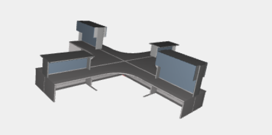

Animated Project on plasm.js
Linx furniture
One furniture line really can do it all! LINX modular furniture is different from conventional office lines. It is not a panel-based system, but a freestanding technical desking platform. This kind of construction gives you and your facility planners the ultimate flexibility in creating a space efficient office layout.
Worksurface platforms
To create th worksurface platform,I used some fixed paramenter, like plane's widht and heigh, and some parameter function to make support's plane and the same plane. Can see the pseudo-code below. The heigh of plane is 0.20, while its widht is 6 and its depth is 2.70; for the support the heigh is 0.05 + 2, the width is 0.15 and depth is 2.70. The support's plane and plane is create by 4 function : CREATE_PTL(...) is used to return an array of curve to map and points; MAPC(...) take an array of curve that have been mapped in S2 with BEZIER function (the curve has mapped with the next one); while CREATE_PLANE and MAKE_LEG use the other two function in order to create plane and support's plane.
PROBLEM:
The more complex the platform was center_table: the problem lies in the fact that it is not possible to rotate an array of points on an axis that would return the new array of points, in qunato is possible to perform the rotation only with objects, but it remains impossible to map in S1,objects already mapped in S0.
SOLUTION:
The solution comes from the idea of having an array of points and not rotated objects. My need was to rotate around the Z axis, so a rotation matrix was applied (multiplied) to my vector of points.
function rotZ (arrayOfPoints,a) {
var result = [];
for (i=0; i < arrayOfPoints.length; i++) {
p = arrayOfPoints[i]
AffineTransformation = [[COS(a),SIN(a),0],[-SIN(a),COS(a),0],[0,0,1]]
var mul = numeric.dot(AffineTransformation,p)
result=result.concat([mul])
}
return result
}
Worksurface platforms in project are three:

l = 2.60;r = 0.2;h = 0.05;
//this are the point of curve
ptl = [[0,0,h],[l,0,h],[l+0.05,r/4,h],[l+0.1,r/2,h],[l+0.05,r,h],[l,r,h],[0,r,h]];
//returned array with NUBS curve with ptl as controlpoints, center, end, and ptl
function create_ptl(l,r,h);
//create leg for worksurface platforms
function make_leg(l,r,h);
//args is array of curve(NUBS o BEZIER(S0)) that must be mapped in S1
function mapC(args);
//return an object, the worksurface platforms
function create_plane(l,r,h);
x_plane = h*41;y_plane = l;z_plane = r;
new_heigh = h*40;new_prof = l/2;new_weigh = r-0.05;
// base is the right leg, build through function mapC([create_ptl(l,r,h),create_ptl(new_prof,new_weigh,new_heigh])
table_leg = STRUCT([make_leg(l,r,h),create_plane(y_plane,z_plane,x_plane),base,behind])
Integrated Storage Solutions
For the integrated storage are create two models that after are been translated. To achieve this target you have not added new features
The integrated storage are two:
Final model temporary
To complete the office structure,I have rotated the half model respect z-axis for PI (angle). Can see two screenshot:
Middle
The middle consists in CUBOID that are properly rotate and translate and in Cylinder
Accessories
Accessories:
- Monitor
- Pen
- Pc
Final
Now we can see the final model on plasm.js enviroment: View model